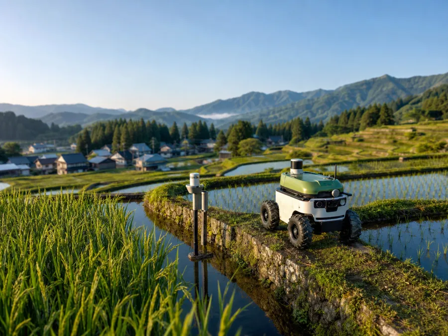
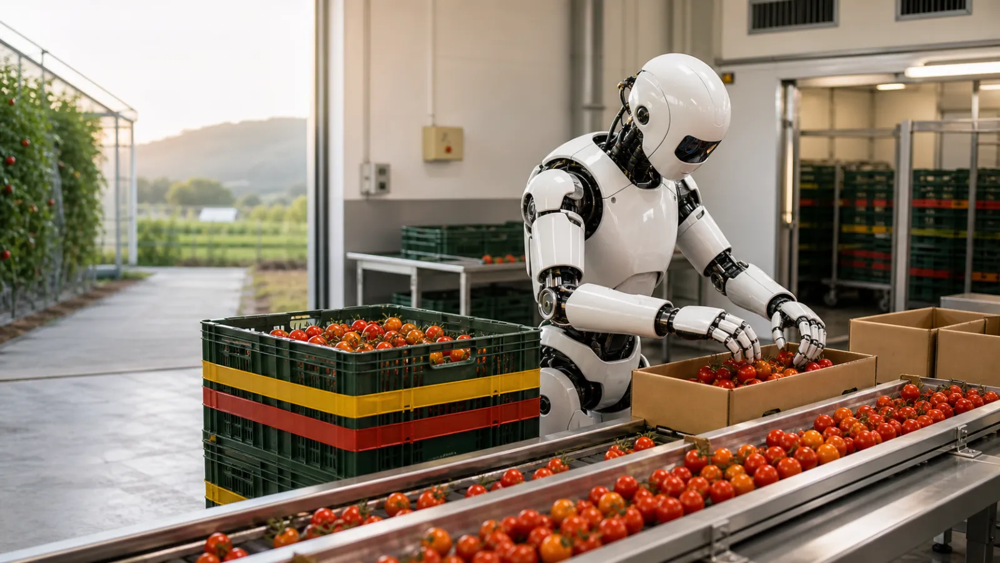
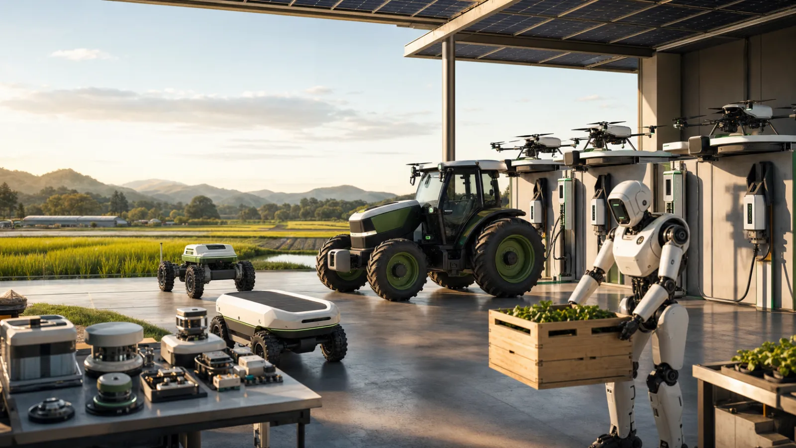
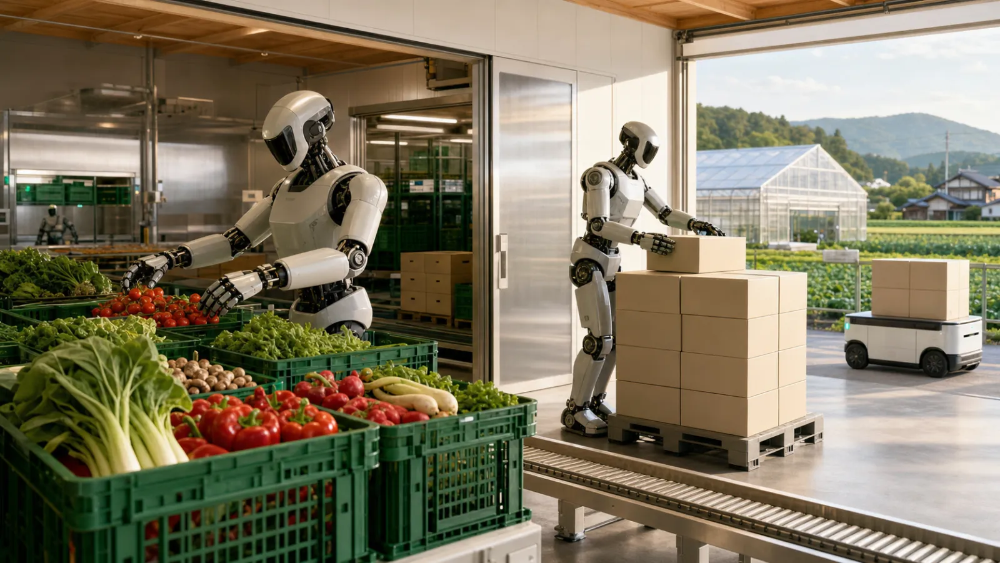
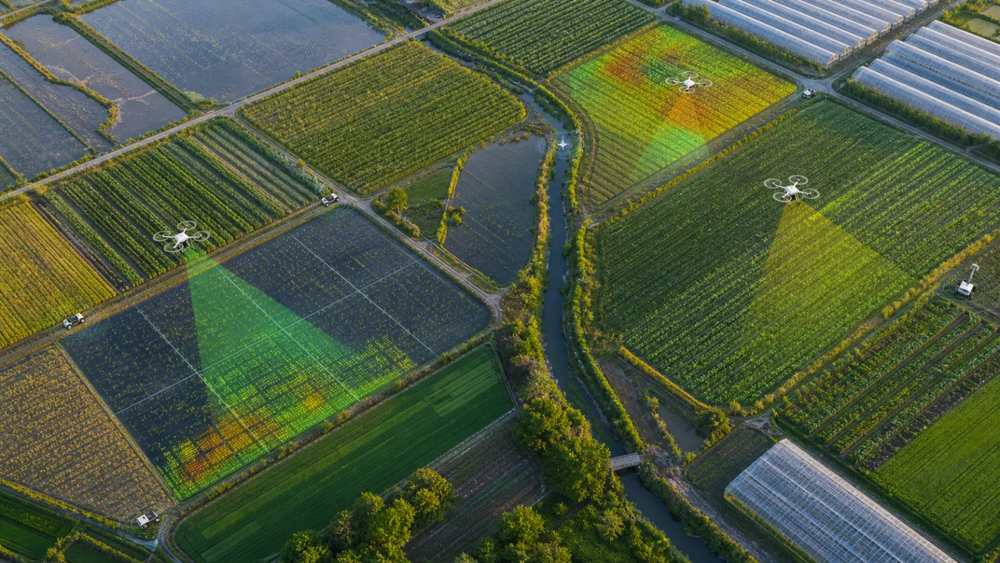

労働はフィジカルAIへ。参加はアプリへ。
1口1万円から農場のオーナーになり、自律ロボットが育てる作物を
ライブで観察し、野菜かお金で受け取る——
担い手がいなくても、関わる人が増える農業へ。
一次統計(農林水産省)を追うと、この課題は「頑張って人を増やす」では解けないことがわかります。 数字はすべて公的統計・公表資料に基づきます。
※ 一方で法人経営体だけは増加(5年で+7.9%)し、経営耕地20ha以上の経営体が面積シェア5割を初めて突破 — 「少人数で広い農地を回す」構造転換はすでに始まっている。
作業は農地の上でしか発生せず、労働供給は土地に縛られる。その身体の平均年齢が67.6歳になった今、労働と土地を分離できない産業設計そのものが限界を迎えた。
農地の所有は農地法で厳しく制限され、農業は小口の投資対象として設計されていない。意欲ある資金と再生可能な農地9.4万haが、接続されないまま向かい合っている。
移住・転職という人生を賭けた参加か、スーパーで買うだけの無関係か。中間の関わり方が存在しないため、関係人口が育たず、課題は「他人事」であり続ける。
Agri Portは、荒廃農地を「ポート(港)」に変えるプラットフォーム。 フィジカルAIの艦隊が入港して耕作を担い、全国の参加者の資本と関心が入出港する—— ポートフォリオの「ポート」との、ダブルミーニングです。

全国の「ポート」から好きな農場を選び、1口1万円から参加。魚沼の棚田、阿蘇の元・耕作放棄地、十勝の大規模輪作——ポートフォリオを組むように農業に参加する。
自分の区画をライブカメラとAI作業ログで観察。「AGRI-BOT 03が雑草214株を除去」「台風接近、深水管理へ自動移行」——推し農場をオブザーブする新しい日常体験。

リターンは野菜でも、お金でも。自分の区画で採れた収穫物の産直Box、または販売収益からの分配。ポートごとに、いつでも切り替え可能。

必要なのは1種類の万能ロボットではなく、「足・手・目・インフラ・頭脳・守り」の6レイヤーの艦隊編成。 ポートの地形と作物によって構成を組み替えます。すべて実在技術です。
自律トラクタ(クボタ・ヤンマー 商用化済)に加え、電動小型機が価格の壁を破壊中 — Monarch MK-V 約$75k(電動×自律)、オープンソースのfarm-ng Amigaは$13k。不整地は月面探査技術由来の輝翠TECH「Adam」(GPS不要SLAM)が走る。
収穫RaaS(inaho・AGRIST)、ヒューマノイド選果に加え、レーザー除草が主役級 — Carbon Robotics G2はNVIDIA GPU 24基で最大60万本/時の雑草を焼灼、除草剤を大幅削減し投資回収1〜3年(公称)。スポット散布のSolixは除草剤〜98%減。
衛星(広域)→ドローン(圃場)→機体カメラ(mm級)の3層構造。Sentinel-2は無料・10m解像度、Planetは3m・毎日・約$2/ha/年。荒廃農地の発掘は衛星AI「ACTABA」(サグリ、判定精度9割超)がポート候補地を全国からスキャンする。
LPWA水位センサーは1.98万円・通信費月額0円まで下がった。ソーラー自立ロボ(Aigen $50k)は充電ドックすら不要。圏外の中山間地はStarlinkで解決 — John Deere×SpaceXが既に自律農機の通信基盤として実装済み。
ロボット基盤モデル(NVIDIA Isaac GR00T、Apache 2.0で商用可)と、Carbon Roboticsの「Large Plant Model」— 1.5億本の植物データで学習し、1機の経験が艦隊全体に共有されるフリートラーニングが実在。Agri Portのポート網は、この学習ループに毎日データを供給する「データの港」でもある。
中山間ポートの敵は獣と草。オオカミ型ロボ「モンスターウルフ」(60万円台〜)は半径150mに野生動物が接近しなくなった実績。自律草刈り(和同KRONOS・Automower 15〜60万円)と組み合わせ、15〜100万円級の最小資本で荒廃地の再生を始められる。
| レイヤー | 🌾 水田ポート | 🥬 露地野菜ポート | 🍓 施設園芸ポート | ⛰ 中山間・再生ポート |
|---|---|---|---|---|
| 足 | 自律トラクタ・田植機クボタ / ヤンマー | 電動小型トラクタMonarch $75k / Amiga $13k | レール・台車(定置中心) | 不整地SLAMロボ輝翠TECH Adam |
| 手 | ドローン防除・自動水管理 | レーザー除草・スポット散布ROI 1〜3年(公称) | 収穫RaaS+ヒューマノイド選果inaho 15% / AGRIST 10% | 自動草刈り・運搬・獣害ロボ |
| 目 | 衛星NDVI+水位センサー1.98万円・月額0円 | 衛星+機体カメラ基盤モデルが作物/雑草を識別 | 温室センサー網温湿度・CO2・画像 | 衛星で荒廃地検出ACTABA 精度9割超 |
| インフラ | LPWA(年数千円) | LTE+ソーラー自立ロボ | 商用電源(最も容易) | Starlink+ソーラードック |
| 経済性 | センサー数万円で即導入 | 除草のROIが最も実証済み | 既存RaaSをそのまま転用可 | 15〜100万円級・最小資本で開始 |
| 頭脳 | 全ポート共通: ロボット基盤モデル+フリートラーニング — 1機の学習が全艦隊の知能になり、ポート網は「データの港」として第2の収益源を生む | |||
担い手問題の裏には、もう一つの構造課題 — 流通があります。 Agri Portでは出資=前払購入。作付けの前に「買い手・数量・価格」が確定しているため、 サプライチェーン全体を逆向きに設計できます。

出資=前払購入で作付け前に完売。豊作は「暴落リスク」ではなく「参加者への嬉しい上振れ」に変わり、キャベツ1万玉廃棄のような産地廃棄の構造そのものを無効化する。国も契約取引の拡大(加工・業務用98万t→145万t目標)を推進 — 同じ方向を消費者参加型で個人農家に開く。
野菜・果樹の労働時間の最大の塊は畑の外の選果・調製・出荷(ねぎ49%・いちご35%)。ここをヒューマノイドが担い、区画ロット単位で参加者に紐づけてトレース。多品目×非定型のこの工程は、BMW工場の部品仕分け(Figure 03)やGXO物流の10万トート搬送(Digit)と同型の実証済みタスク。
需要地・数量が事前確定するため、混載・パレット化・予約集荷で物流を平準化できる(現状の農産物は手積み2時間の手荷役が残る世界)。規格外品(収穫量の約13%)も「わけあり枠」として同じ箱で参加者へ — 未出荷ロスの受け皿になる。
お金は都市から地方へ、労働はロボットへ、野菜とデータと風景は参加者へ。

自律トラクタ(クボタ・ヤンマー)、収穫ロボのRaaS(inaho・AGRIST)、John Deereは2030年完全自律艦隊を宣言し、さらにヒューマノイドのApptronikへ5.2億ドルを出資 — 農機最大手が人型に賭けた。1台1,000万円超のロボットも、多数の小口参加者が1台を共同稼働させるAgri Port型なら回る(Hello Tractorが共有モデルの先行実証)。Goldman Sachsはヒューマノイド市場を2035年380億ドルと予測。
スペインのCrowdFarmingは樹木アダプション30万件超・売上6,500万ユーロ(2024年)、農家手取りは慣行流通の約2倍。国内でも楽天Ragriが先行したが、人手依存のまま2020年に終了 — フィジカルAIがその制約を外すのがAgri Port。
2009年改正で農地リースは全面自由化(最長50年)。野菜リターンは購入型契約として金商法の外で始められ、スケール期に二種業提携で投資型へ拡張——段階設計が制度上きれいに引ける。
国内スマート農業市場は2030年に788億円(矢野経済研究所)、農業ロボット市場は2035年に4,663億円(NEDO試算)。政府は2030年度に自給率45%目標を閣議決定 — 荒廃農地の再生は国策そのものであり、補助金・自治体連携の追い風が吹く。
農業者の高齢化は世界共通 — そして日本は、その最先端を歩いている。 日本で解けた農業OSは、そのまま地球の標準になる。
荒廃農地の再生は土壌炭素の回復そのもの。世界の農地土壌には年3.3〜6.8Gt-CO2の貯留ポテンシャルがあり(Nature Sci. Rep.)、カーボンクレジット需要は2030年に15倍(McKinsey試算)。Indigo Agは既に累計約100万t分を発行し農家に$12M超を支払った。リターンは野菜・お金、そして「地球」。
カーボン市場最大の課題は信頼性 — 主要認証の熱帯林クレジットの9割超が「幻」とする調査報道が市場を揺らした。従来の検証(MRV)は$50〜200/haと高コスト。毎日観察する艦隊+数万人の観察者は、常時・改竄困難・公開の検証データを生む。ライブ観察(エンタメ)と検証(MRV)が同一システム — Agri Portだけの構造。
世界の国際送金は低中所得国向けだけで年$685B(World Bank 2024)— FDIもODAも上回る資本流入。農村世帯では約半分が農業関連に使われる(IFAD)。ディアスポラが故郷の村のポートに出資し、故郷の畑をライブ観察する — 平均6.4%の送金手数料で消えていた価値が、農地の再生に変わる。
JAXAは月面農場を構想し(2019年報告書)、NASAは180超のセンサーで全自動制御する宇宙植物栽培装置(APH)をISSで運用中。完全無人・完全循環という月面農場の要求仕様は、Agri Portの施設ポートの延長線上にある。2040年 — ポートは砂漠へ、そして月面へ。フィジカルAIで農業を再発明することは、人類が「どこでも食料を作れる種」になるための練習である。
提携農家1軒+収穫ロボRaaS 1台で「観察できる区画オーナー制」を開始。野菜リターンのみ(Track A・金商法対象外)で法的リスクなく検証。ライブ配信とAI作業ログが本当に「観たいコンテンツ」になるかを実証する。
KPI: 1ポート / 参加者300人 / 継続率60%10ポートへ拡大。ふるさと納税返礼・企業の福利厚生と接続し、AI艦隊(トラクタ+ドローン+収穫ロボ)の多ポート巡回運用でRaaS単価を圧縮。地域側に「ポート保守パートナー」の雇用を創出。
KPI: 10ポート / 参加者1万人 / 再生農地50ha第二種金融商品取引業者と提携し、匿名組合型「荒廃農地再生ファンド」をシリーズ組成。金銭リターンを解禁し、機関投資家・自治体資金を受け入れ。生育データ事業を収益の第2柱に。
KPI: 100ポート / 運用資産30億円 / 再生農地1,000ha全国1,000ポート。フィジカルAIが自律的に耕す風景が地方の新しい原風景になり、国民の1%が何らかのポートに参加している状態へ。担い手30万人時代に、関わる人1,000万人の農業をつくる。
KPI: 1,000ポート / 再生農地1万ha / 参加者100万人ナイロビ高原に送金ポート、アンダルシアに気候分散ポート。Track C(カーボン)を本格化し、艦隊の観察データがdMRVクレジットの検証台帳になる。世界の耕作放棄地・約1億haの0.1%=10万haの再生を目標に、日本で磨いた農業OSを、地球人のインフラとして輸出する。
KPI: 海外10カ国 / 再生10万ha / dMRVクレジット発行開始